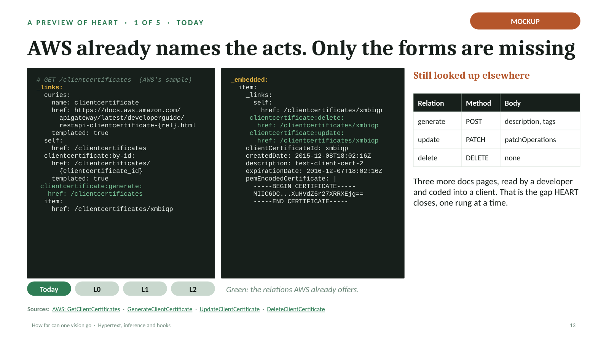
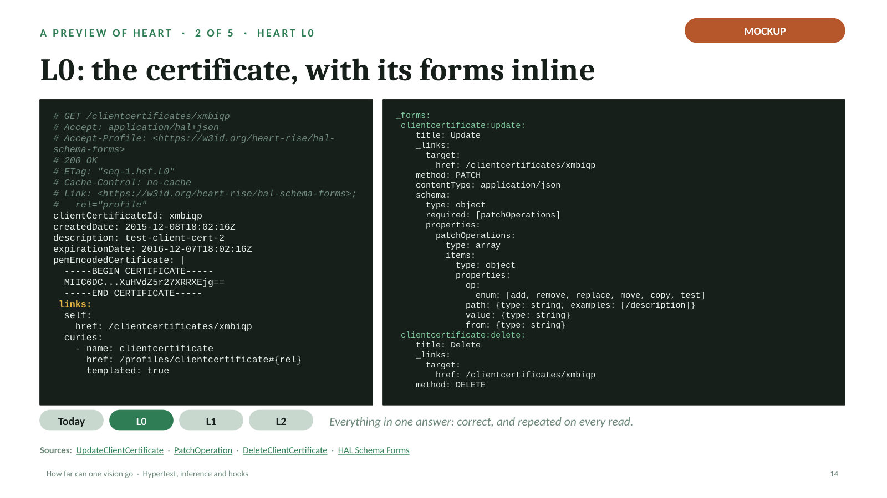
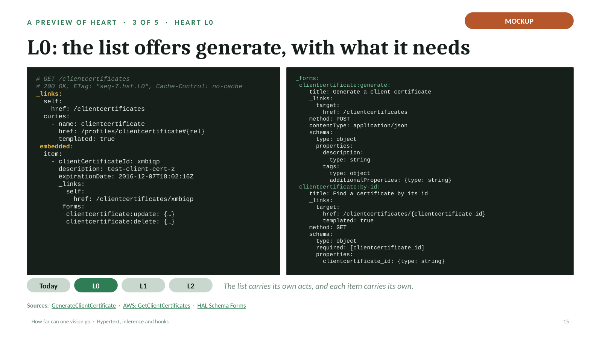
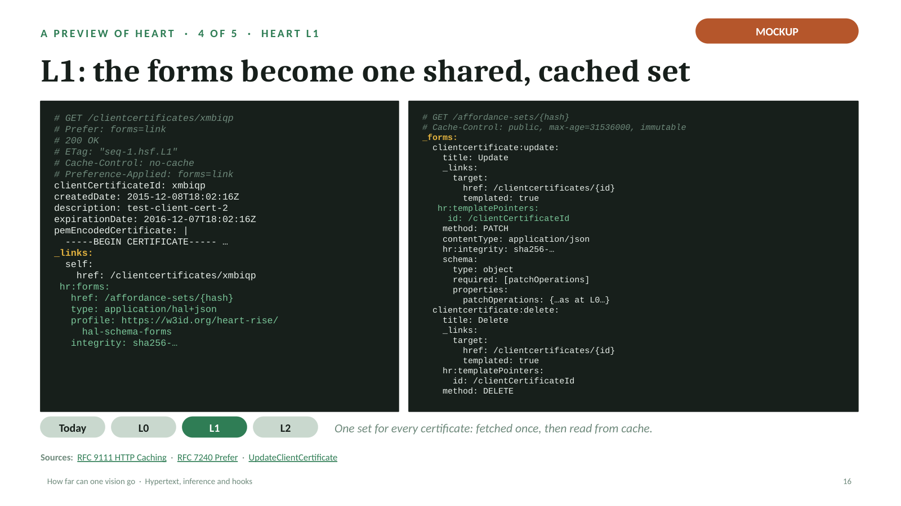
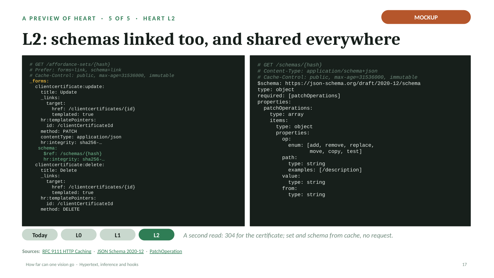

AWS client certificate, as HEART L0, L1, L2
Full deck, 46 slides: the preview sits at slides 13 to 17.
Mockup: illustrative, not served by AWS today. Download the .pptx (links on the slides are live there).




